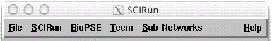
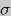
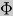
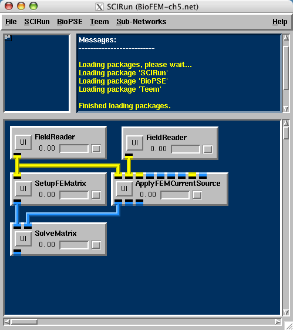
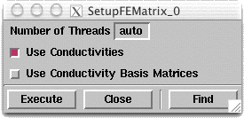
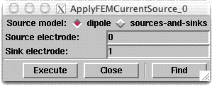
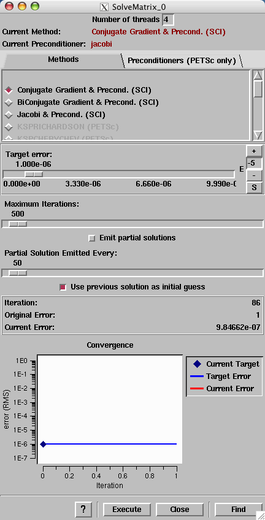

Chapter 5: Bioelectric Field SimulationChapter Sections
Chapter OverviewChapters 1-4 discussed various dataflow programming networks. The networks were built to visualize existing datasets. Chapter 5 demonstrates the construction of a network that computes simulated voltages for a realistic volume conductor problem.Thus far, modules from the SCIRun package have been used (packages are logically grouped sets of modules). Figure 5.1 shows a SCIRun menu bar from a build that features several additional packages. To learn more about packages, see User's Guide 3, Packages. Note that in addition to the Packages listed (SCIRun, BioPSE, and Teem), the Menu Bar has Sub-Networks and Help menus. Sub-Networks are a new addition to SCIRun (V1.20). Sub-networks allow modules to be grouped together (e.g., by functionality). They are useful for hiding complexity of dataflow networks by consolidating groups of modules that work together into a single representation on the Network Editory canvas. See User's Guide, Chapter 5 for more information on Sub-Networks. The Help menu allows the user to turn on/off the use of Tooltips, show the About splash screen, and review the SCIRun License.
 Modules within the SCIRun package serve as general purpose tools that do not target specific applications. This chapter uses modules from the BioPSE package, which contains a set of tools specifically written for modeling, simulation, and visualization of bioelectric field problems. Volume Conductor ProblemGiven a volume conductor model and an equivalent dipole source, the user will compute the potentials and electric field induced by the source through the domain. Analytic solutions exist for problems of specific geometric models (e.g., cylinders or spheres). However, for most real-world problems, the solution can only be obtained through discretization. For this application, the user will discretize the domain into tetrahedral finite elements, where each element contains a conductivity tensor that defines how electricity travels through its region of the domain. Within each element, a piece-wise linear potential field is assumed (piece-wise constant electric field). The above problem is governed mathematically by Poisson's equation:
where  is the local
conductivity tensor, 
is the voltage over the domain, and Discretizing Poisson's equation onto the tetrahedral domain, the divergence of the electric field with the stiffness matrix A is approximated. is a vector composed of voltages at the nodes. And b is a source vector indicating the flux through the nodes. b it is only non-zero for nodes that are corners of elements containing a current source. Given a stiffness matrix, A, and a source vector, b, the linear system:
can be solved to determine the potentials,, through the field. Taking the gradient, Finite Element Simulation NetworkTo compute the electric and potential fields given a finite element volume conductor mesh and a dipolar current source, follow these steps:
Each of the above steps corresponds to a SCIRun module:
All modules should be connected as shown in Figure 5.2.
 FEM User Interface SettingsThe SetupFEMatrix module constructs a finite element stiffness matrix from a tetrahedral volume mesh. The user can incorporate the local conductivity tensors into the stiffness matrix, or use a uniform conductivity as shown in Figure 5.3. For this application, incorporate the local conductivity changes.  The SolveMatrix module solves a linear system using one of several methods as indicated in the UI.
 Finally, for this simulation:
The mesh field contains the tetrahedral finite element mesh, which forms the geometry of the torso. The mesh field also contains pointers to the electric conductivity values as assigned to each element. In Poisson's equation, these are the values of sigma. The dipole field contains a single dipole vector, positioned within the torso volume that functions as the bioelectric source. Running The SimulationExecute the network, and as the simulation progresses, watch the residual plot in the SolveMatrix UI converge. To see the solution converge again, make sure the "Use previous solution as initial guess" is unchecked in the UI and re-execute the module. A finite element problem has just been solved. Save this net, it will be used in Chapter 6.SummaryChapter 5 demonstrated the use of modules from the bioelectric problem solving environment (BioPSE) package. This chapter also illustrated the construction of a simulation network that computes simulated voltages for a realistic volume conductor problem.Chapter 6 will reuse the finite element simulation network from chapter 5, and the visualization network from Chapter 4. |